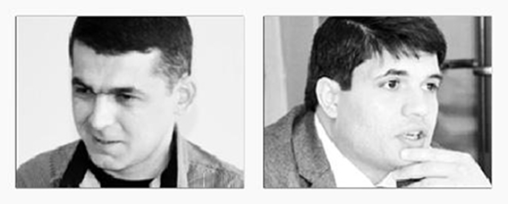

ЗУРАБ ЗУБАШВИЛИ ПРОТИВ ЗАКОНА О ГРАЖДАНСТВЕ РФ, ПОЗВОЛЯЮЩЕГО ПОВАЛЬНО ВЫДАВАТЬ ПАСПОРТА РОССИИ ОСЕТИНСКИМ И АБХАЗСКИМ ГРАЖДАНАМ ГРУЗИИ
Протокол Гражданского слушания
с участием представителей Азербайджана, Армении и Грузии
Тбилиси
16.04.2011
Истец: Зураб Зубашвили
Ответчик: Эльмар Сулейманов
Председатель комиссии: Луиза Погосян
Члены комиссии: Нино Гоголошвили, Сона Абдуллаева, Дилара Мехти, Гога Апциаури,
Автор и директор программы: проф. Ниязи Мехти
Программу осуществляют:
Альянс женщин за гражданское общество- Азербайджан, Кавказский Центр Миротворческих Инициатив - Армения, Кавказский Центр Гражданских Слушаний - Грузия,
при поддержке Национального фонда демократии (NED)
с участием представителей Азербайджана, Армении и Грузии
Тбилиси
16.04.2011
Истец: Зураб Зубашвили
Ответчик: Эльмар Сулейманов
Председатель комиссии: Луиза Погосян
Члены комиссии: Нино Гоголошвили, Сона Абдуллаева, Дилара Мехти, Гога Апциаури,
Автор и директор программы: проф. Ниязи Мехти
Программу осуществляют:
Альянс женщин за гражданское общество- Азербайджан, Кавказский Центр Миротворческих Инициатив - Армения, Кавказский Центр Гражданских Слушаний - Грузия,
при поддержке Национального фонда демократии (NED)
Выступление истца: Уважаемый суд, уважаемые присяжные заседатели! Сегодня мы рассматриваем законность выдачи российских паспортов и присвоение российского гражданства жителям Абхазии и цхинвальского региона Грузии. Хочу отметить, что этот факт в последующем, в августе 2008 года, стал одной из причин, которой аппелировала Россия, чтобы оправдать свое вторжение в Грузию. Сегодня стоит вопрос, насколько законны действия Российской Федерации по массовой паспортизации населения конфликтных регионов Грузии?
Начнем по порядку. Российская сторона массовую паспортизацию объясняла тем, что владельцы старых советских паспортов не могли перемещаться в другие страны. Но между тем она не упоминает о международном праве и суверенитете государства, в котором жили и живут по сей день люди, которым она предоставила свое гражданство.
Предоставлением своего гражданства Россия нарушила не только международное законодательство, но, что не менее важно, и свое собственное законодательство, о чем свидетельствуют факты, которые будут приведены ниже.
В течение весны-лета 2002 года правительство России начало подготовку к выдаче российских паспортов жителям Южной Осетии (так же, как и в грузинских автономных республиках Абхазии и Аджарии).
В июне 2002 г. российский парламент принял необходимые поправки к российскому Закону о гражданстве, которые вызвали сильный протест тогдашнего грузинского президента Эдуарда Шеварднадзе, 56% населения Южной Осетии получили российские паспорта. К середине августа 2006 года эта цифра возросла до 98%. Таким образом, фактически большинство жителей цхинвальского региона и Абхазии, на мой взгляд, стали политическими заложниками РФ. С принятием гражданства РФ, они поставили себя вне грузинского законодательства, поскольку грузинское законодательство, на тот период не предусматривало двойного гражданства на своей территории. Исходя из вышесказанного, жители конфликтных регионов Грузии, получившие гражданства РФ с юридической точки зрения, проживают на этой территории незаконно, поскольку они отказались от гражданства Грузии, приняв гражданство другого государства, с которым действовал тогда и действует по сей день визовый режим. Следует отметить, что комиссия ЕС под председательством Хайди Тальявини, также настаивала на том, что этот процесс российской паспортизации фактически противоречил международному праву.
Чтобы этот процесс был законным, подчеркивала Тальявини, «требуется четкое согласие страны проживания. Грузинский закон, между тем, не признает двойного гражданства…. Подавляющее большинство якобы натурализованных людей из Южной Осетии и Абхазии не являются российскими гражданами, с точки зрения международного права… Они оставались гражданами Грузии, и они остаются таковыми по сей день, с точки зрения закона».
То же самое, в своем докладе на VIII Всемирном конгрессе Международного совета по исследованиям Центральной и Восточной Европы (ICCEES) в Стокгольме, 26-31 июля 2010 года, подтверждает Джон Данлоп (Гуверовский Институт, Стэнфордский университет, США). Доклад Данлопа во многом основывается на исследованиях многих известных российских экспертов, таких как Андрей Илларионов, бывший старший экономический советник президента России в 2000-2005 гг.; Павел Фельгенгауэр, военный обозреватель «Новой газеты»; и журналист Юлия Латынина. Хочу подчеркнуть и то что, массовая выдача российских паспортов происходила не только в Грузии, но и в Украине, в Крыму. По мнению экс-главы МИД Украины Владимира Огрызко, таким образом, российские власти хотели вмешаться в дела автономной республики Крым. В Киеве считают, что в Крыму может повториться южноосетинский сценарий, когда одним из поводов ввести российские войска на территорию республики стал тот факт, что у большинства ее жителей были российские паспорта. Связи с этим, в виде контрмеры, Верховная Рада Украины планирует установить наказание в виде лишения свободы на срок до 5 лет, или наложение штрафа в размере 10 тысяч необлагаемых минимумов, за сокрытие факта двойного гражданства. Закон также дополнятся нормативным актом о том, что гражданин Украины будет обязан сообщать о факте приобретения гражданства другого государства или пребывания в гражданстве (подданстве) другого государства в течение 30 дней. В случае отказа или невыполнения вышеупомянутого требования, гражданин будет подпадать под действии новой статьи Уголовного кодекса. Также предусматривается повысить требования относительно приобретения украинского гражданства, а добровольное принятие гражданином Украины гражданства другого государства будет основанием для лишения его украинского гражданства.
Наверное можно согласится, что приведенные факты присуждения гражданства РФ на постсоветском пространстве явно носят в себе провокационный характер, Исходя из этого, ни одно государство на постсоветском пространстве и в мире, не застраховано от посягательств на свой суверенитет. Механизм довольно прост, можно в массовом порядке раздать паспорта, подтверждающие гражданство РФ, устроить серии провокаций и осуществить интервенцию, под предлогом защиты своих граждан, и что еще хуже, создать сателлитное, «независимое», квазигосударство, которое фактически является военным плацдармом. Если проанализировать закон РФ, на основании которого в упрощенном порядке было присвоено гражданство в конфликтных регионах Грузии, можно с уверенностью сказать, что РФ нарушила не только международное, но и собственное законодательство. К примеру: статья 14, пункт б вышеуказанного закона гласит, что гражданство РФ в упрощенном виде могут получить граждане и лица которые: имели гражданство СССР, проживали и проживают в государствах, входивших в состав СССР, не получили гражданства этих государств и остаются в результате этого лицами без гражданства; в то время, когда пункт 1 статьи 32 гласит, что заявление по вопросам гражданства Российской Федерации подается по месту жительства заявителя
а) лицом, проживающим на территории Российской Федерации и
б) лицом, проживающим за пределами Российской Федерации и не имеющим места жительства на территории Российской Федерации, - в дипломатическое представительство или консульское учреждение Российской Федерации, находящиеся за пределами Российской Федерации.
Если российская сторона утверждает, что выдала паспорта владельцам старых советских паспортов на основании того, что якобы они не могли перемещаться в другие страны, как объяснить тот факт что, уполномоченный по правам человека в Российской Федерации В. Лукин в докладе за 2007 год отметил что «по информации Консульского департамента МИД России, Российская Федерация не имеет дипломатических отношений с Республикой Южная Осетия, также на территории Республики Южная Осетия нет дипломатического представительства или консульского учреждения России».. Таким образом, РФ не имела, и не могла иметь дипломатические отношения с вышеупомянутыми регионами, так как сама признавала территориальную целостность и суверенитет Грузии, а также не имела консульских учреждений в конфликтных зонах, куда могли бы обращаться лица, желающие получить российское гражданство. Омбудсман В. Лукин также не понимает , как большинство жителей этих территорий при не вполне понятных правовых обстоятельствах приобрели российское гражданство». (http://www.rg.ru/2008/03/14/doklad-dok.html).
Налицо явное нарушение российского законодательства. Следовательно, путь приобретения жителями Южной Осетии и Абхазии российских паспортов мог быть только один – незаконный. Не выполнено ни одно требование Закона о Порядке получения российского гражданства (ФЗ 62 от 31.05.2002 года. Ст. 11).
Следует особо отметить, что незаконные действия совершались государством, которое осуществляло миротворческую миссию в конфликтных зонах. Стоит подчеркнуть, что Российская Федерация умудрилась нарушить основополагающие пункты устава ООН. Вот некоторые из них:
«Государства-участники будут уважать суверенное равенство и своеобразие друг друга, а также все права, присущие их суверенитету и охватываемые им, в число которых входит, в частности, право каждого государства на юридическое равенство, на территориальную целостность, на свободу и политическую независимость. Они будут также уважать право друг друга свободно выбирать и развивать свои политические, социальные, экономические и культурные системы, равно как и право устанавливать свои законы и административные правила. Государства-участники будут, равным образом, воздерживаться от любых действий, которые могли бы затруднить мирное урегулирование споров между государствами-участниками».
Нарушив все мыслимые правила, нормы международного права и даже собственное законодательство, Российская Федерация совершила циничную по своей сути, заранее запланированную интервенцию, оккупировав части территории соседнего государства, члена ООН.
Абхазия и Южная Осетия с формальной точки зрения входили в состав Грузии (до решения об их признании Россией 26 августа 2008). Следовательно, войска России по приказу Медведева 8 августа 2008 года были введены на территорию Грузии, и в соответствии со статьей 102 Конституции России и статьей 5 Федерального закона «Об обороне», для использования российских вооруженных войск за пределами РФ требовалось согласие Совета Федерации — верхней палаты российского парламента. Такое согласие Совет Федерации не давал. Таким образом, использование российских войск на территории Грузии было осуществлено с грубым нарушением законодательства и конституции РФ. Стоит отметить, что российские правозащитники внесли жалобу и попросили Генпрокурора РФ установить должностных лиц российских вооруженных сил, санкционировавших незаконное использование войск на территории Грузии, и внести в их адрес представление об устранении допущенных нарушений конституции и закона «Об обороне». (http://aillarionov.livejournal.com/96879.html#cutid1).
Конец доклада.
ПРЕНИЯ ПО ВЫСТУПЛЕНИЮ ИСТЦА
Сона Абдуллаева (член комиссии): Что вы подразумевали, когда говорили, что РФ присвоением своего гражданства жителям Абхазии и Южной Осетии пользуется в качестве оружия против них самых?
Истец: Я приведу случай, произошедший в Абхазии с журналистом Ахра Смыр, который также являлся гражданином РФ. После того как он опубликовал статью, содержащую некоторую критику действий российских властей в Абхазии посол РФ в Абхазии заявил о необходимости выяснения, насколько законным путем получил журналист российское гражданство. Своим заявлением российский посол подтверждает мою позицию и допускает, что можно без законных на то оснований получить гражданство РФ, и также без особых оснований его можно потерять.
Гога Апциаури (член комисссии): Вы говорили о том, что Грузия не признает двойного гражданства? Но я лично знаком с людьми, которые обладают двойным гражданством в Грузии.
Истец: Присвоение гражданства Грузии регулируется органическим законом Грузии, где и прописано, что гражданин Грузии не имеет права одновременно быть гражданином другой страны, кроме установленных исключений. Президентом Грузии гражданство страны присваивается гражданину другой страны в виде исключения, впрочем, это достаточно несложная процедура. Любой гражданин любой другой страны может подать заявку на имя президента Грузии на получение грузинского гражданства. В большинстве случаев прошение удовлетворяется.
Вопрос с места: Вы упомянули, что массовая выдача российских паспортов происходила не только в Грузии, но и в Украине - в Крыму, и что связи с этим в виде контрмеры, Верховная Рада Украины планирует установить наказание в виде лишения свободы. Как вы думаете, нужно ли другим странам бывшего СССР взять пример с Украины?
Истец: Я думаю, что каждое суверенное независимое государство вправе устанавливать такие законы и законодательные акты, которые будут направлены на защиту своего государства и суверенитета, исходя из международного права и интересов граждан, проживающих на этих территориях.
Председатель закрывает прения по выступлению истца и дает слово Ответчику.
ЭЛЬМАР СУЛЕЙМАНОВ О ЗАКОННОСТИ ВЫДАЧИ РОССИЙСКИХ ПАСПОРТОВ
Уважаемая комиссия! Сегодня мы попытаемся рассмотреть законность выдачи российских паспортов и присвоение российского гражданства жителям Абхазии и Цхинвальского региона Грузии и августовские события, произошедшие 2008 году.
С вашего позволения, я сформулирую мой ответ в шестидесяти тезисах:
1. Августовские события на Южном Кавказе, как последствие несоблюдения естественных прав жителей, указанных автономных Республик Грузии и обстрел миротворческих сил Российской Федерации и развязывания войны Грузией необходимо рассматривать сквозь призму национального, международного, гуманитарного права, с точки зрения соблюдения прав человека и оценить исходя из политической необходимости;
2. Критика в адрес Москвы, относительно незаконного представления РФ гражданства населению Абхазии и Южной Осетии, попытка преподнести это как инструмент подпитки сепаратизма, не имеет под собой твердой почвы;
3. Реалии динамики развития современного мира, современных правовых систем, направлены не на подавлении государственными образованиями основных прав и свобод человека, а, наоборот, на их обеспечение;
4. В основу современного правосознания положены такие идеи как верховенство естественных прав человека, свобода личности, свобода слова, свобода выбора и передвижения, осуществление которых в двух бывших автономий Грузии были практически невозможны в реалиях сложившейся политической ситуации;
5. Население Осетии и Абхазии без наличия паспорта признанного государства не могли обеспечивать свои даже элементарные человеческие права, такие как свобода перемещения, право на качественное лечение, образование и т.п.
6. Во второй главе Конституции Грузии декларируются права и свободы граждан, к которым Грузия относит и осетин и абхазцев;
7. Но давайте посмотрим, выходят ли эти права за рамки простой декларации и не являются ли они закостенелыми и не эффективными в реалиях политических отношений между Грузией, Абхазией и Осетией;
8. В состояние ли Грузия, как того требует ст. 13 Конституции Грузии, оказать покровительство своим Осетино - абхазским гражданам (если они себя таковыми считают), обеспечить эти права и свободы, к примеру такие как:
- неприкосновенность жизни 15;
- свобода слова, мнений и убеждений 20;
- неприкосновенность собственности 21;
- свободное передвижение и свобода выбора места жительства;
- свобода выезда из страны;
- создание общественных организаций 26:
- создание политических партий 26;
- свобода политической деятельности и т.п.
9. Хотя в целях обеспечения именно этих и иных общепризнанных фундаментальных прав в преамбуле Конституции Грузии делается ударение на предложение «… обеспечение общепризнанных прав и свобод человека»;
10. Тех общепризнанных прав и свобод, о которых говорится:
- во «Всеобщей декларации прав человека»,
- в «Международном пакте о гражданских и политических правах»,
- в Международном пакте об экономических, социальных и культурных правах»,
- в «Декларации о правах лиц, принадлежащих к национальным или этническим, религиозным и языковым меньшинствам»,
- в «Европейской конвенции о защите прав и основных свобод человека»,
- и в других международных нормах;
11. Но давайте попытаемся взглянуть на ситуацию, хотя бы, в призме Конституции Грузии и понять реальность, к примеру:
- сколько осетин и абхазов представлены в Сенате, как того требует ст. 4 Конституции;
- скольким из них удается свободно передвигаться по стране, как того требует ст. 22;
- скольким удалось выехать за пределы Грузии, как того требует ст. 22;
- сколько зарегистрировано их политических партий, как того требует ст. 26;
- сколькие из них занимают высшие государственные должности, как того требует ст. 29;
- сколькие из них занимаются свободным предпринимательством в Грузии, как того требует ст. 30;
- сколькие из них получают социальные пособия, как того требует ст. 31 Конституции;
- в чем выражается их участие в культурной жизни, проявлении и обогащении культурной самобытности, как того требует ст. 34 Конституции;
- сколькие из них получают профессиональное и высшее образование при государственном финансировании, как того требует ст. 35 Конституции;
12. И как ни прискорбно, но реальность такова, что Грузия, по тем или иным причинам, не в состоянии обеспечить даже эти права жителей Осетии и Абхазии, закрепленных в своей Конституции. В Конституции, за которую жители этих регионов не голосовали;
13. К сожалению, реальностью является и то, что жители этих регионов еще вчера были зажаты тисками безысходности, когда, ввиду отсутствия общепризнаваемого паспорта, больной не мог вылететь на лечение, а молодой на обучение, когда в эпоху глобализации жители этих регионов все еще были изолированы от мирового сообщества;
14. Итак мы вплотную подошли к вопросу, «что делать живым людям, которые желают жить, но не желают быть гражданами государства, которое не в состоянии обеспечить их минимальные, но фундаментальные права, права- признанные международным правом и закрепленные в Конституции Грузии»;
15. Учитывая всё вышеперечисленное нам необходимо ответить на два глобальных вопроса а) имеют ли жители этих регионов моральное право на полноценную жизнь, жизнь без страха и опасений; и второй вопрос б) как им добиться светлого будущего;
16. Жители этих регионов, ради наличия простого будущего решили отказаться, а точнее вообще не принимать гражданство Грузии, но имели ли они на это право? Имели ли они право принять гражданство иной страны, к примеру, Российской Федерации?
17. Обратимся все к той же Конституции Грузии. Статья 7 Конституции Грузии, гласит: Грузия признает и соблюдает общепризнанные права и свободы человека как непреходящие и высшие человеческие ценности;
18. А в пункте 2-ой статьи 12 в вопросе приобретения и утраты гражданства ссылается на органический закон, который в ст. 2 напрямую указывает, что никто не может быть ограничен в праве на изменения гражданства, а в статье 31 предусматривает право гражданина Грузии на выход из гражданства Грузии;
19. Более того одним из оснований утраты гражданства гражданином Грузии ст.32 этого закона предусматривает принятие гражданства другого государства;
20. В соответствии с «Европейской конвенцией о гражданстве», которую также признает Грузия, в ст.7 говорится о добровольном приобретении гражданства, как об основании для прекращения первичного гражданства, при чем в ст.8 указанной Конвенции напрямую указывается, что каждое государство-участник разрешает отказ от его гражданства, при условии, что соответствующие лица не становятся в результате этого лицами без гражданства;
21. Значит мы ответили на один из важных вопросов, если жителей этих регионов и считать гражданами Грузи, то на основании вышеперечисленных нормативных актов, они были вправе отказаться от гражданства Грузии.
22. Теперь остается ответить на другой вопрос, были ли они вправе выбрать и получить Российское гражданство?
23. Безусловно да! Одним из способов приобретения гражданства является приобретение гражданства в порядке натурализации. Международному праву известны индивидуальная натурализация, производимая по заявлению индивида;
24. Приобретение гражданства в порядке натурализации является добровольным актом волеизъявления со стороны натурализуемого лица. Это может выражается в подаче заявления о натурализации;
25. В соответствии с Конституцией РФ гражданство Российской Федерации приобретается и прекращается в соответствии с федеральным законом, является единым и равным независимо от оснований приобретения;
26. Напомним, что ранее действовавший Закон о гражданстве РФ от 1992 за десятилетний период своего действия не претерпел существенных изменений ни в связи с подписанием Россией в 1997 г. Европейской конвенции о гражданстве, ни в связи с необходимостью учета сложившихся отношений между Россией и новыми независимыми государствами, образовавшимися в результате распада СССР;
27. Именно в связи с этим в этот Закон были внесены ряд дополнений и изменений, а не в связи с абхазско-осетинским вопросом, как то утверждается оппонентом;
28. Прежде всего, отметим, что в соответствии с новым Законом российское гражданство приобретается по рождению, в результате общего или упрощенного приема в гражданство РФ и восстановления в гражданстве РФ, а также по иным основаниям, предусмотренным данным Законом или международным договором (статья 11);
29. В свете нашей дискуссии мы остановимся на положениях закона, предусматривающего прием в гражданство РФ в упрощенном порядке;
30. Итак, согласно статье 14 Федерального закона упрощенный порядок распространяется на иностранных граждан и лиц без гражданства, достигших возраста 18 лет, если они: имеют хотя бы одного нетрудоспособного родителя, состоящего в гражданстве Российской Федерации или являлись гражданами СССР, проживали и проживают в государствах, входивших в состав СССР, не получили гражданства этих государств и остаются в результате этого лицами без гражданства. При этом срок проживания на территории Российской Федерации не имеет значения;
31. Как было отмечено выше жители Абхазского и Осетинского регионов не принимая гражданства Грузии фактически оставались лицом без гражданства, что не приветствуется международным правом, которое признает Грузия, и что давало им полностью возможность принять гражданство РФ в упрощенном порядке.
32. Европейская конвенция о гражданстве ставя перед собой задачу избежания безгражданства, фактически переводит этот вопрос в плоскость общепризнанного права человека на обязательное наличие гражданства, что напрямую в конституции Грузии не указано;
33. Но, тем не менее, ст. 39 Конституции Грузии, гласит: Конституция Грузии не отвергает других общепризнанных прав, свобод и гарантий человека и гражданина, которые в ней не упомянуты;
34. Более того, необходимо напомнить и то, что первые паспорта жителям этих регионов выдавались по закону о гражданстве ещё 1991 года (который вступил в силу со дня опубликования т.е. 06.02.1992, а пункт «г» в 1995 году продлили до 31 декабря 2000 г.), по которому в порядке регистрации принимались: г) граждане СССР, постоянно проживающие на территории других республик, непосредственно входивших в состав бывшего СССР по состоянии на 1 сентября 1991 года, если они не являются гражданами этих республик и в течение трех лет со дня вступления в силу настоящего Закона заявят о своем желании приобрести гражданство РСФСР;
35. И в связи с тем, что они не являлись гражданами Грузии (с учетом того, что Южная Осетия и Абхазия провозглашали независимость от Грузии ещё в 1989-1991 годах), они получали гражданство России по пункту «г)»;
36. Уважаемый господин Зубашвили оппонирует тем, что ввиду отсутствия консульского отдела или посольства в этих регионах у жителей этих регионов не было юридических оснований подать заявление о принятии гражданства РФ;
37. Но читая закон РФ о гражданстве, мы невольно сталкиваемся и со статьей 32, в котором говорится, что если заявитель не может лично подать заявление, то такое заявление и необходимые документы могут быть переданы для рассмотрения через другое лицо либо направлены по почте. Т.е. минуя дипломатическое учреждение;
38. Более того, несмотря на то, что в ст. 34 Органического Закона Грузии о гражданстве Грузии заявление заинтересованных лиц относительно гражданства вносится в Министерство Юстиции Грузии, а лица, проживающие за пределами Грузии направляют заявления Главе государства Грузии, через дипломатические представительства, консульские учреждения или непосредственно, в последнее время такие заявления стало возможным направлять и по электронной почте.
39. К сведению многих из тех, кто об этом не знает, сообщу, что получить гражданство Грузии находящиеся за рубежом граждане могут и без приезда в страну;
40. В Агентстве гражданского реестра Минюста Грузии внедрили с этой целью онлайн-систему получения заявлений. Таким путем гражданство уже присвоено восьмерым гражданам. Троим было отказано в предоставлении гражданства. Первым этой системой воспользовался проживающий в США Цотнэ Джавахишвили. В настоящее время в стадии рассмотрения присвоения гражданства находится 21 заявление, полученной онлайн-методом (http://forum.tbilicity.com/viewtopic.php?f=62&t);
41. Таким образом, оппонент заостряя внимание на протокольных и бюрократических проволочках преднамеренно или нет, но пытается увести наше внимание от основного вопроса - от обеспечения основных прав и свобод людей и граждан, проживающих в этих регионах;
42. В соответствии с международным правом и конституциями большинства стран, в том числе конституциями Грузии и России, каждый человек вправе избирать и менять свое гражданство, что добровольно и сделало абсолютное большинство населения Осетии и Абхазии после провозглашения 1989-1991 годах независимости от Грузии своих стран.
43. Это не было инициативой Москвы, то было желанием и стремлением этих людей получить гражданство РФ, что бы суметь полноценно осуществлять свои права. И ни одна правовая система не предполагает запрета на право выбора или изменения лицом своего гражданства.
44. Российские паспорта стали выдаваться населению этих регионов на основании закона о гражданстве РФ от 1991 года после завершения войны с Грузией в 1994 году.
45. В соответствии с этим законом гражданам РФ, находящимся за ее пределами, предоставляются защита и покровительство РФ, а органы государственной власти РФ обязаны содействовать тому, чтобы гражданам РФ была обеспечена возможность пользоваться в полном объеме всеми правами, установленными Конституцией РФ, федеральными конституционными законами, федеральными законами, общепризнанными принципами и нормами международного права, международными договорами РФ (ст.7).
46. А в соответствии с Конституцией РФ признание, соблюдение и защита прав и свобод человека и гражданина – это обязанность государства (ст.2.), РФ гарантирует своим гражданам защиту и покровительство за ее пределами (ст.61) и независимо от места жительства и других обстоятельств (ст.18).
47. Исходя из вышеизложенного, РФ обязана была защитить своих граждан, что она и сделала;
48. Сегодня мои оппоненты рассматривают выход российских военных за пределы Южной Осетии и Абхазии, как решение задач, нацеленных не на непосредственную защиту своих миротворцев, а как нарушение права со стороны РФ;
49. Апеллируя нормами международного права, рассматривающего нападение на миротворческий контингент как грубое нарушение, необходимо учитывать принципиальную разницу между военными операциями на территории независимого государства, если жизни и здоровью миротворцев ничего не угрожает и защитой собственных миротворческих сил.
50. Достаточно ознакомиться с фактами августовских и предавгустовских событий, заключением международной миссии по расследованию этих событий, что бы рассеять сомнения относительно преднамеренной эскалации Тбилиси насилия, развязывании военных действий и вовлечения РФ, выполняющую миротворческую миссию в войну.
51. «В ночь с 7 на 8 августа 2008 года на Цхинвали была произведена грузинская атака, поддержанная артиллерией. Другие передвижения грузинских войск, нацеленные на Цхинвали и прилегающие территории, вскоре вовлекли в боевые действия Россию, абхазские и осетинские военные подразделения и вооруженные элементы».
52. Именно такая последовательность событий «горячего августа» предлагается в итоговом докладе международной Миссии, которая так же отмечает и нижеследующее:
53. «Не было продолжительных вооруженных атак России до того, как Грузия начала операцию» в Цхинвали, - говорится в докладе миссии. Обстрел Цхинвали грузинскими вооруженными силами в ночь с 7 на 8 августа стали началом полномасштабного военного конфликта в Грузии, но в то же время это была только высшая точка длительного периода нарастающей напряженности, насилия, инцидентов».
54. Стремление РФ к мирному урегулированию конфликта подтверждается так же и предложением Москвы о заключении соглашения о неприменении силы в конфликтных регионах, как о предусловии для переговоров по Абхазии и Южной Осетии.
55. Но, несмотря на степень напряженности в регионе, не до конца продуманные заявления западных союзников Тбилиси, в частности критика вышеуказанной инициативы Москвы 21 июля 2008 года, на том основании, что вопросы возвращение беженцев не требовали никаких предварительных условий, вполне могли быть восприняты Тбилиси, как одобрение его силовых приготовлений, результатом которого стала ускоренная милитаризация Грузии.
56. Усиление вооруженных сил Грузии вызывало озабоченность не только в Москве, но и в Брюсселе. Так, выступая на конференции в Словении 28 августа 2006 года, Европейский комиссар Бенита Ферреро-Вальднер: «выразила сожаление по поводу того факта, что оборонные расходы в Грузии «выросли выше крыши», и что это не оправдано, принимая во внимание значительные финансовые потребности этих стран в образовании, здравоохранении, развитии малого бизнеса».
57. Именно ЕС осудила Тбилиси за применение силы в ходе «размораживания» конфликта» в 2004 году и отметила, что именно в грузинском нарастающем «милитаризме» есть причина предпосылок для «одностороннего усиления России» в Кавказском регионе.
58. Вышеуказанное еще раз доказывает, что этот конфликт на Южном Кавказе стоит вывести за рамки только пяти августовских дней и согласиться с тем, что РФ была искусственно вовлечена в конфликт и принуждена к применению силы, будучи спровоцированной Тбилиси.
59. А правовое обоснование обеспечения основных прав и свобод граждан РФ, а также их защиты и покровительства вполне детально и четко расписаны в Конституции РФ, в Законе о гражданстве РФ и других нормативных актах;
60. Однако, справедливости ради, хотелось бы отметить и то, что это - на первый взгляд простое определение соотношений, тем не менее, вытекает в серьезную коллизию, выраженную в проблеме соотнесения реальности, формальных принципов, политической необходимости, продиктованного геополитическими интересами закулисных участников данного конфликта.
Конец доклада.
Вопрос с места: Почему осетины и абхазы не обратятся в Грузию для получения гражданства?
Ответчик: Они изначально объявили свою независимость и не считают Грузию своей страной, думаю, если бы это было наоборот, то они обязательно изъявили бы такое желание.
Вопрос с места: Войну начали Российские военные и этот исторический факт и то, что Вы говорите о том, что военные действия были начаты Грузией не совсем соответствует действительности.
Ответчик: Я ссылаюсь на доклад международной миссии, в котором четко сказано, что военные действия были начаты именно со стороны Грузии.
Гога Апциаури (член комиссии): Россия не имела права принимать в гражданство осетины и абхазцев, так как они де факто граждане Грузии.
Ответчик: Российское законодательство не запрещает принятии в гражданство любого человека, отвечающего определенным требованиям закона. Осетины и абхазы так же имели право быть принятым в гражданство РФ или любой другой страны, в зависимости от их желания.
Вопрос с места: Россия вынудила жителей этих регионов принять свое гражданство.
Ответчик: Вопрос принятия гражданства является добровольным, никто не может быть в принудительном (не принимая во внимание приобретение гражданства по рождению и по иным общепринятыми в международном праве основаниям) порядке принят в гражданство, но в отношении осетин и абхазцев нужно учесть и тот факт, что они были «де-факто» были лицами безгражданства, хотя это «де-юре» оформлено не было. И посему они были лишены многих прав, в том числе и права свободного передвижения.
Вопрос с места: А как Вы объясните то, что выдача паспортов было незаконным и потому что в Осетии и в Абхазии не было консульских учреждений, который по законодательству РФ имели право принимать заявления о принятии в гражданство?
Ответчик: Я уже говорил об этом закон о гражданстве РФ не ограничивает права тех лиц, которые не в состоянии лично подать заявления в консульские учреждения, облегчая это возможностью отослать такое заявление по почте. Более того, напомню и то, что в Грузии например уже практикуется принятие заявления о гражданстве посредством интернета. Так, что думаю не стоит заострять внимание на бюрократических проволочках, когда речь идет о фундаментальных правах человека.
Вопрос с места: А что если РФ начнет паспортизацию в регионах Азербайджана, где проживают национальные меньшинства?
Ответчик: Все постоянно проживающие в Азербайджанской Республике лица, в том числе и более 1 000 000 беженцев из Армении и Карабаха (естественно не считая лиц без гражданства и иностранцев) являются гражданами Азербайджанской Республики и подчинятся законам страны.
Вопрос с места: Не считаете ли Вы, что РФ провела паспортизацию исключительно для того, что бы оккупировать указанные территории Грузии?
Ответчик: В соответствии с Конституцией РФ и Законом о гражданстве РФ защита своих граждан, независимо от места их пребывания, является обязанностью Российской Федерации.
Кто считает аргументы и взгляд Истца более обоснованными?
За – 15
Против – 7
Воздержавшихся – 5
Председатель: Голосование показывает, что наглядное большинство зрителей-присяжных считают иск против Закона РФ обоснованным.
С вашего позволения, я сформулирую мой ответ в шестидесяти тезисах:
1. Августовские события на Южном Кавказе, как последствие несоблюдения естественных прав жителей, указанных автономных Республик Грузии и обстрел миротворческих сил Российской Федерации и развязывания войны Грузией необходимо рассматривать сквозь призму национального, международного, гуманитарного права, с точки зрения соблюдения прав человека и оценить исходя из политической необходимости;
2. Критика в адрес Москвы, относительно незаконного представления РФ гражданства населению Абхазии и Южной Осетии, попытка преподнести это как инструмент подпитки сепаратизма, не имеет под собой твердой почвы;
3. Реалии динамики развития современного мира, современных правовых систем, направлены не на подавлении государственными образованиями основных прав и свобод человека, а, наоборот, на их обеспечение;
4. В основу современного правосознания положены такие идеи как верховенство естественных прав человека, свобода личности, свобода слова, свобода выбора и передвижения, осуществление которых в двух бывших автономий Грузии были практически невозможны в реалиях сложившейся политической ситуации;
5. Население Осетии и Абхазии без наличия паспорта признанного государства не могли обеспечивать свои даже элементарные человеческие права, такие как свобода перемещения, право на качественное лечение, образование и т.п.
6. Во второй главе Конституции Грузии декларируются права и свободы граждан, к которым Грузия относит и осетин и абхазцев;
7. Но давайте посмотрим, выходят ли эти права за рамки простой декларации и не являются ли они закостенелыми и не эффективными в реалиях политических отношений между Грузией, Абхазией и Осетией;
8. В состояние ли Грузия, как того требует ст. 13 Конституции Грузии, оказать покровительство своим Осетино - абхазским гражданам (если они себя таковыми считают), обеспечить эти права и свободы, к примеру такие как:
- неприкосновенность жизни 15;
- свобода слова, мнений и убеждений 20;
- неприкосновенность собственности 21;
- свободное передвижение и свобода выбора места жительства;
- свобода выезда из страны;
- создание общественных организаций 26:
- создание политических партий 26;
- свобода политической деятельности и т.п.
9. Хотя в целях обеспечения именно этих и иных общепризнанных фундаментальных прав в преамбуле Конституции Грузии делается ударение на предложение «… обеспечение общепризнанных прав и свобод человека»;
10. Тех общепризнанных прав и свобод, о которых говорится:
- во «Всеобщей декларации прав человека»,
- в «Международном пакте о гражданских и политических правах»,
- в Международном пакте об экономических, социальных и культурных правах»,
- в «Декларации о правах лиц, принадлежащих к национальным или этническим, религиозным и языковым меньшинствам»,
- в «Европейской конвенции о защите прав и основных свобод человека»,
- и в других международных нормах;
11. Но давайте попытаемся взглянуть на ситуацию, хотя бы, в призме Конституции Грузии и понять реальность, к примеру:
- сколько осетин и абхазов представлены в Сенате, как того требует ст. 4 Конституции;
- скольким из них удается свободно передвигаться по стране, как того требует ст. 22;
- скольким удалось выехать за пределы Грузии, как того требует ст. 22;
- сколько зарегистрировано их политических партий, как того требует ст. 26;
- сколькие из них занимают высшие государственные должности, как того требует ст. 29;
- сколькие из них занимаются свободным предпринимательством в Грузии, как того требует ст. 30;
- сколькие из них получают социальные пособия, как того требует ст. 31 Конституции;
- в чем выражается их участие в культурной жизни, проявлении и обогащении культурной самобытности, как того требует ст. 34 Конституции;
- сколькие из них получают профессиональное и высшее образование при государственном финансировании, как того требует ст. 35 Конституции;
12. И как ни прискорбно, но реальность такова, что Грузия, по тем или иным причинам, не в состоянии обеспечить даже эти права жителей Осетии и Абхазии, закрепленных в своей Конституции. В Конституции, за которую жители этих регионов не голосовали;
13. К сожалению, реальностью является и то, что жители этих регионов еще вчера были зажаты тисками безысходности, когда, ввиду отсутствия общепризнаваемого паспорта, больной не мог вылететь на лечение, а молодой на обучение, когда в эпоху глобализации жители этих регионов все еще были изолированы от мирового сообщества;
14. Итак мы вплотную подошли к вопросу, «что делать живым людям, которые желают жить, но не желают быть гражданами государства, которое не в состоянии обеспечить их минимальные, но фундаментальные права, права- признанные международным правом и закрепленные в Конституции Грузии»;
15. Учитывая всё вышеперечисленное нам необходимо ответить на два глобальных вопроса а) имеют ли жители этих регионов моральное право на полноценную жизнь, жизнь без страха и опасений; и второй вопрос б) как им добиться светлого будущего;
16. Жители этих регионов, ради наличия простого будущего решили отказаться, а точнее вообще не принимать гражданство Грузии, но имели ли они на это право? Имели ли они право принять гражданство иной страны, к примеру, Российской Федерации?
17. Обратимся все к той же Конституции Грузии. Статья 7 Конституции Грузии, гласит: Грузия признает и соблюдает общепризнанные права и свободы человека как непреходящие и высшие человеческие ценности;
18. А в пункте 2-ой статьи 12 в вопросе приобретения и утраты гражданства ссылается на органический закон, который в ст. 2 напрямую указывает, что никто не может быть ограничен в праве на изменения гражданства, а в статье 31 предусматривает право гражданина Грузии на выход из гражданства Грузии;
19. Более того одним из оснований утраты гражданства гражданином Грузии ст.32 этого закона предусматривает принятие гражданства другого государства;
20. В соответствии с «Европейской конвенцией о гражданстве», которую также признает Грузия, в ст.7 говорится о добровольном приобретении гражданства, как об основании для прекращения первичного гражданства, при чем в ст.8 указанной Конвенции напрямую указывается, что каждое государство-участник разрешает отказ от его гражданства, при условии, что соответствующие лица не становятся в результате этого лицами без гражданства;
21. Значит мы ответили на один из важных вопросов, если жителей этих регионов и считать гражданами Грузи, то на основании вышеперечисленных нормативных актов, они были вправе отказаться от гражданства Грузии.
22. Теперь остается ответить на другой вопрос, были ли они вправе выбрать и получить Российское гражданство?
23. Безусловно да! Одним из способов приобретения гражданства является приобретение гражданства в порядке натурализации. Международному праву известны индивидуальная натурализация, производимая по заявлению индивида;
24. Приобретение гражданства в порядке натурализации является добровольным актом волеизъявления со стороны натурализуемого лица. Это может выражается в подаче заявления о натурализации;
25. В соответствии с Конституцией РФ гражданство Российской Федерации приобретается и прекращается в соответствии с федеральным законом, является единым и равным независимо от оснований приобретения;
26. Напомним, что ранее действовавший Закон о гражданстве РФ от 1992 за десятилетний период своего действия не претерпел существенных изменений ни в связи с подписанием Россией в 1997 г. Европейской конвенции о гражданстве, ни в связи с необходимостью учета сложившихся отношений между Россией и новыми независимыми государствами, образовавшимися в результате распада СССР;
27. Именно в связи с этим в этот Закон были внесены ряд дополнений и изменений, а не в связи с абхазско-осетинским вопросом, как то утверждается оппонентом;
28. Прежде всего, отметим, что в соответствии с новым Законом российское гражданство приобретается по рождению, в результате общего или упрощенного приема в гражданство РФ и восстановления в гражданстве РФ, а также по иным основаниям, предусмотренным данным Законом или международным договором (статья 11);
29. В свете нашей дискуссии мы остановимся на положениях закона, предусматривающего прием в гражданство РФ в упрощенном порядке;
30. Итак, согласно статье 14 Федерального закона упрощенный порядок распространяется на иностранных граждан и лиц без гражданства, достигших возраста 18 лет, если они: имеют хотя бы одного нетрудоспособного родителя, состоящего в гражданстве Российской Федерации или являлись гражданами СССР, проживали и проживают в государствах, входивших в состав СССР, не получили гражданства этих государств и остаются в результате этого лицами без гражданства. При этом срок проживания на территории Российской Федерации не имеет значения;
31. Как было отмечено выше жители Абхазского и Осетинского регионов не принимая гражданства Грузии фактически оставались лицом без гражданства, что не приветствуется международным правом, которое признает Грузия, и что давало им полностью возможность принять гражданство РФ в упрощенном порядке.
32. Европейская конвенция о гражданстве ставя перед собой задачу избежания безгражданства, фактически переводит этот вопрос в плоскость общепризнанного права человека на обязательное наличие гражданства, что напрямую в конституции Грузии не указано;
33. Но, тем не менее, ст. 39 Конституции Грузии, гласит: Конституция Грузии не отвергает других общепризнанных прав, свобод и гарантий человека и гражданина, которые в ней не упомянуты;
34. Более того, необходимо напомнить и то, что первые паспорта жителям этих регионов выдавались по закону о гражданстве ещё 1991 года (который вступил в силу со дня опубликования т.е. 06.02.1992, а пункт «г» в 1995 году продлили до 31 декабря 2000 г.), по которому в порядке регистрации принимались: г) граждане СССР, постоянно проживающие на территории других республик, непосредственно входивших в состав бывшего СССР по состоянии на 1 сентября 1991 года, если они не являются гражданами этих республик и в течение трех лет со дня вступления в силу настоящего Закона заявят о своем желании приобрести гражданство РСФСР;
35. И в связи с тем, что они не являлись гражданами Грузии (с учетом того, что Южная Осетия и Абхазия провозглашали независимость от Грузии ещё в 1989-1991 годах), они получали гражданство России по пункту «г)»;
36. Уважаемый господин Зубашвили оппонирует тем, что ввиду отсутствия консульского отдела или посольства в этих регионах у жителей этих регионов не было юридических оснований подать заявление о принятии гражданства РФ;
37. Но читая закон РФ о гражданстве, мы невольно сталкиваемся и со статьей 32, в котором говорится, что если заявитель не может лично подать заявление, то такое заявление и необходимые документы могут быть переданы для рассмотрения через другое лицо либо направлены по почте. Т.е. минуя дипломатическое учреждение;
38. Более того, несмотря на то, что в ст. 34 Органического Закона Грузии о гражданстве Грузии заявление заинтересованных лиц относительно гражданства вносится в Министерство Юстиции Грузии, а лица, проживающие за пределами Грузии направляют заявления Главе государства Грузии, через дипломатические представительства, консульские учреждения или непосредственно, в последнее время такие заявления стало возможным направлять и по электронной почте.
39. К сведению многих из тех, кто об этом не знает, сообщу, что получить гражданство Грузии находящиеся за рубежом граждане могут и без приезда в страну;
40. В Агентстве гражданского реестра Минюста Грузии внедрили с этой целью онлайн-систему получения заявлений. Таким путем гражданство уже присвоено восьмерым гражданам. Троим было отказано в предоставлении гражданства. Первым этой системой воспользовался проживающий в США Цотнэ Джавахишвили. В настоящее время в стадии рассмотрения присвоения гражданства находится 21 заявление, полученной онлайн-методом (http://forum.tbilicity.com/viewtopic.php?f=62&t);
41. Таким образом, оппонент заостряя внимание на протокольных и бюрократических проволочках преднамеренно или нет, но пытается увести наше внимание от основного вопроса - от обеспечения основных прав и свобод людей и граждан, проживающих в этих регионах;
42. В соответствии с международным правом и конституциями большинства стран, в том числе конституциями Грузии и России, каждый человек вправе избирать и менять свое гражданство, что добровольно и сделало абсолютное большинство населения Осетии и Абхазии после провозглашения 1989-1991 годах независимости от Грузии своих стран.
43. Это не было инициативой Москвы, то было желанием и стремлением этих людей получить гражданство РФ, что бы суметь полноценно осуществлять свои права. И ни одна правовая система не предполагает запрета на право выбора или изменения лицом своего гражданства.
44. Российские паспорта стали выдаваться населению этих регионов на основании закона о гражданстве РФ от 1991 года после завершения войны с Грузией в 1994 году.
45. В соответствии с этим законом гражданам РФ, находящимся за ее пределами, предоставляются защита и покровительство РФ, а органы государственной власти РФ обязаны содействовать тому, чтобы гражданам РФ была обеспечена возможность пользоваться в полном объеме всеми правами, установленными Конституцией РФ, федеральными конституционными законами, федеральными законами, общепризнанными принципами и нормами международного права, международными договорами РФ (ст.7).
46. А в соответствии с Конституцией РФ признание, соблюдение и защита прав и свобод человека и гражданина – это обязанность государства (ст.2.), РФ гарантирует своим гражданам защиту и покровительство за ее пределами (ст.61) и независимо от места жительства и других обстоятельств (ст.18).
47. Исходя из вышеизложенного, РФ обязана была защитить своих граждан, что она и сделала;
48. Сегодня мои оппоненты рассматривают выход российских военных за пределы Южной Осетии и Абхазии, как решение задач, нацеленных не на непосредственную защиту своих миротворцев, а как нарушение права со стороны РФ;
49. Апеллируя нормами международного права, рассматривающего нападение на миротворческий контингент как грубое нарушение, необходимо учитывать принципиальную разницу между военными операциями на территории независимого государства, если жизни и здоровью миротворцев ничего не угрожает и защитой собственных миротворческих сил.
50. Достаточно ознакомиться с фактами августовских и предавгустовских событий, заключением международной миссии по расследованию этих событий, что бы рассеять сомнения относительно преднамеренной эскалации Тбилиси насилия, развязывании военных действий и вовлечения РФ, выполняющую миротворческую миссию в войну.
51. «В ночь с 7 на 8 августа 2008 года на Цхинвали была произведена грузинская атака, поддержанная артиллерией. Другие передвижения грузинских войск, нацеленные на Цхинвали и прилегающие территории, вскоре вовлекли в боевые действия Россию, абхазские и осетинские военные подразделения и вооруженные элементы».
52. Именно такая последовательность событий «горячего августа» предлагается в итоговом докладе международной Миссии, которая так же отмечает и нижеследующее:
53. «Не было продолжительных вооруженных атак России до того, как Грузия начала операцию» в Цхинвали, - говорится в докладе миссии. Обстрел Цхинвали грузинскими вооруженными силами в ночь с 7 на 8 августа стали началом полномасштабного военного конфликта в Грузии, но в то же время это была только высшая точка длительного периода нарастающей напряженности, насилия, инцидентов».
54. Стремление РФ к мирному урегулированию конфликта подтверждается так же и предложением Москвы о заключении соглашения о неприменении силы в конфликтных регионах, как о предусловии для переговоров по Абхазии и Южной Осетии.
55. Но, несмотря на степень напряженности в регионе, не до конца продуманные заявления западных союзников Тбилиси, в частности критика вышеуказанной инициативы Москвы 21 июля 2008 года, на том основании, что вопросы возвращение беженцев не требовали никаких предварительных условий, вполне могли быть восприняты Тбилиси, как одобрение его силовых приготовлений, результатом которого стала ускоренная милитаризация Грузии.
56. Усиление вооруженных сил Грузии вызывало озабоченность не только в Москве, но и в Брюсселе. Так, выступая на конференции в Словении 28 августа 2006 года, Европейский комиссар Бенита Ферреро-Вальднер: «выразила сожаление по поводу того факта, что оборонные расходы в Грузии «выросли выше крыши», и что это не оправдано, принимая во внимание значительные финансовые потребности этих стран в образовании, здравоохранении, развитии малого бизнеса».
57. Именно ЕС осудила Тбилиси за применение силы в ходе «размораживания» конфликта» в 2004 году и отметила, что именно в грузинском нарастающем «милитаризме» есть причина предпосылок для «одностороннего усиления России» в Кавказском регионе.
58. Вышеуказанное еще раз доказывает, что этот конфликт на Южном Кавказе стоит вывести за рамки только пяти августовских дней и согласиться с тем, что РФ была искусственно вовлечена в конфликт и принуждена к применению силы, будучи спровоцированной Тбилиси.
59. А правовое обоснование обеспечения основных прав и свобод граждан РФ, а также их защиты и покровительства вполне детально и четко расписаны в Конституции РФ, в Законе о гражданстве РФ и других нормативных актах;
60. Однако, справедливости ради, хотелось бы отметить и то, что это - на первый взгляд простое определение соотношений, тем не менее, вытекает в серьезную коллизию, выраженную в проблеме соотнесения реальности, формальных принципов, политической необходимости, продиктованного геополитическими интересами закулисных участников данного конфликта.
Конец доклада.
ПРЕНИЯ ПО ВЫСТУПЛЕНИЮ OТВЕТЧИКА
Вопрос с места: Почему осетины и абхазы не обратятся в Грузию для получения гражданства?
Ответчик: Они изначально объявили свою независимость и не считают Грузию своей страной, думаю, если бы это было наоборот, то они обязательно изъявили бы такое желание.
Вопрос с места: Войну начали Российские военные и этот исторический факт и то, что Вы говорите о том, что военные действия были начаты Грузией не совсем соответствует действительности.
Ответчик: Я ссылаюсь на доклад международной миссии, в котором четко сказано, что военные действия были начаты именно со стороны Грузии.
Гога Апциаури (член комиссии): Россия не имела права принимать в гражданство осетины и абхазцев, так как они де факто граждане Грузии.
Ответчик: Российское законодательство не запрещает принятии в гражданство любого человека, отвечающего определенным требованиям закона. Осетины и абхазы так же имели право быть принятым в гражданство РФ или любой другой страны, в зависимости от их желания.
Вопрос с места: Россия вынудила жителей этих регионов принять свое гражданство.
Ответчик: Вопрос принятия гражданства является добровольным, никто не может быть в принудительном (не принимая во внимание приобретение гражданства по рождению и по иным общепринятыми в международном праве основаниям) порядке принят в гражданство, но в отношении осетин и абхазцев нужно учесть и тот факт, что они были «де-факто» были лицами безгражданства, хотя это «де-юре» оформлено не было. И посему они были лишены многих прав, в том числе и права свободного передвижения.
Вопрос с места: А как Вы объясните то, что выдача паспортов было незаконным и потому что в Осетии и в Абхазии не было консульских учреждений, который по законодательству РФ имели право принимать заявления о принятии в гражданство?
Ответчик: Я уже говорил об этом закон о гражданстве РФ не ограничивает права тех лиц, которые не в состоянии лично подать заявления в консульские учреждения, облегчая это возможностью отослать такое заявление по почте. Более того, напомню и то, что в Грузии например уже практикуется принятие заявления о гражданстве посредством интернета. Так, что думаю не стоит заострять внимание на бюрократических проволочках, когда речь идет о фундаментальных правах человека.
Вопрос с места: А что если РФ начнет паспортизацию в регионах Азербайджана, где проживают национальные меньшинства?
Ответчик: Все постоянно проживающие в Азербайджанской Республике лица, в том числе и более 1 000 000 беженцев из Армении и Карабаха (естественно не считая лиц без гражданства и иностранцев) являются гражданами Азербайджанской Республики и подчинятся законам страны.
Вопрос с места: Не считаете ли Вы, что РФ провела паспортизацию исключительно для того, что бы оккупировать указанные территории Грузии?
Ответчик: В соответствии с Конституцией РФ и Законом о гражданстве РФ защита своих граждан, независимо от места их пребывания, является обязанностью Российской Федерации.
ИТОГИ ГОЛОСОВАНИЯ
Кто считает аргументы и взгляд Истца более обоснованными?
За – 15
Против – 7
Воздержавшихся – 5
Председатель: Голосование показывает, что наглядное большинство зрителей-присяжных считают иск против Закона РФ обоснованным.